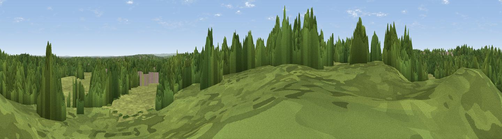

Ether Hill
#45361 in England · top 76% of its area beats it · near Ottershaw · path 148 mWhere it is
The exact computed spot (TQ 01561 64099). Click the marker for map links.
Public access: the nearest public right of way is about 148 m away — the final stretch may cross private land. Computed from Natural England's CRoW access layer and OpenStreetMap rights of way — not the legal definitive map. Always verify locally.
The view, rendered

A 360° render of this exact spot computed from the terrain model, tree cover and land cover — summer colours, afternoon light, calibrated against photographs of famous viewpoints. Real trees, hedges and buildings will differ in detail.
The panorama
Grey silhouette: terrain skyline in each direction (720 bearings, Earth curvature and refraction included). Dashed green: skyline with trees (+15 m) and buildings (+8 m) as obstacles. Blue strip: how far the ground is visible on each bearing.
Where the view opens
Wedge length = distance to the farthest visible ground on that bearing (vegetation-aware). Rings at 10, 25 and 50 km.
What fills the view
55% woodland · 37% grassland · 7% built-up · 1% cropland
Angular shares of the visible panorama (visual magnitude), not map area. Landscape diversity 0.41 (0–1 Shannon).
Key numbers
More beautiful places nearby
The staircase of upgrades: each row has a higher view potential than everything closer. Driving times are estimates from straight-line distance, calibrated against real road routing — check an actual route before setting out.
| Place | Direction | Drive | Score |
|---|---|---|---|
| Fox Hills | NNW · 1 km | ~3 min | 27.9 |
| St Ann's Hill | NNE · 4 km | ~9 min | 33.7 |
| Viewpoint near Bishopsgate | NNW · 9 km | ~17 min | 36.6 |
| High Curley Hill | WSW · 11 km | ~20 min | 38.5 |
| Windsor Castle | NNW · 14 km | ~25 min | 39.8 |
| Viewpoint near Chilworth | S · 15 km | ~27 min | 43.1 |
| Viewpoint near Albury | S · 15 km | ~27 min | 44.6 |
| Viewpoint near Shere | SSE · 16 km | ~28 min | 50.1 |
51.36689, -0.54250 · source: osm peak · position refined by local search. Computed location — check access rights before visiting.